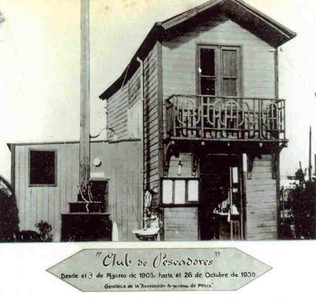

En un viejo muelle llamado de los Franceses suerte de prolongación de la actual calle Ayacucho, unido a los murallones por donde pasaban los trenes de la Estación Retiro, se funda el Club de Pescadores, primera entidad en su género en América Latina. Este muelle de diez cuadras de largo era utilizado en el siglo pasado por empresas carboneras francesas para desembarcar su producto en nuestro país y descargarlo directamente a vagones del ferrocarril, los que luego se deslizaban por unas vías colocadas sobre aquel muelle. La actividad del mismo había cesado hace algún tiempo, y el abandono causaba en él un deterioro creciente.
Un grupo de pescadores que allí se reunía para practicar su deporte, autorizados para el uso del mismo por las autoridades nacionales, munidos de tablones, maderas y restos de material ferroviario lo repara y reforma con su propio esfuerzo, poniendo aquello en condiciones para poder practicar allí la pesca: Nada más y nada menos que diez cuadras de muelle!

10 de agosto de 1905
La vida del Club está inexorablemente ligada a las aguas embravecidas del Plata. En efecto, estas aguas han provocado reiteradas veces daños que, a otras gentes menos cabalmente persistentes, tal vez les hubiera significado poner fin a los esfuerzos, bajar los brazos y entregarse a la derrota. A los socios del Club de Pescadores jamás les ocurrió eso. Ese 10 de agosto, las aguas del Río de la Plata, en la furia implacable de una sudestada descuaja los pilotes del viejo muelle carbonero llevándose para siempre el Muelle de los Franceses. El desaliento cundió entre los aficionados. La consigna es impedir que el esfuerzo se pierda y que la ya pujante grey pescadora se disperse. Don Pedro Mazzini, ya por entonces Presidente del Club, es quien a la cabeza del conjunto logra mantener la unión y la voluntad de progresar ante la adversidad.
14 de abril de 1910
Ya con don Julio Almanza como Presidente -quien sucedió al segundo Presidente don Pedro Mazzini- se inician importantes gestiones ante el Señor Presidente de la República don José Figueroa Alcorta para la obtención por parte del Club del rompeolas de la Dársena Norte, que no es otro que el que hoy ocupa nuestra entidad amiga, la Asociación Argentina de Pesca. Al producirse discrepancias en el más alto nivel nacional al respecto de este pedido, se forma una Comisión Especial para entrevistar al Dr. Figueroa Alcorta, la cual es encabezada por los Sres. Grande, Almanza y Mazzini, la cual, y gracias al apoyo del Sr. Almirante Blanco, obtienen del Presidente de la Nación dicho permiso, con el agregado que se brinda a la Institución vigilancia armada en dicha escollera.
{kind=link}